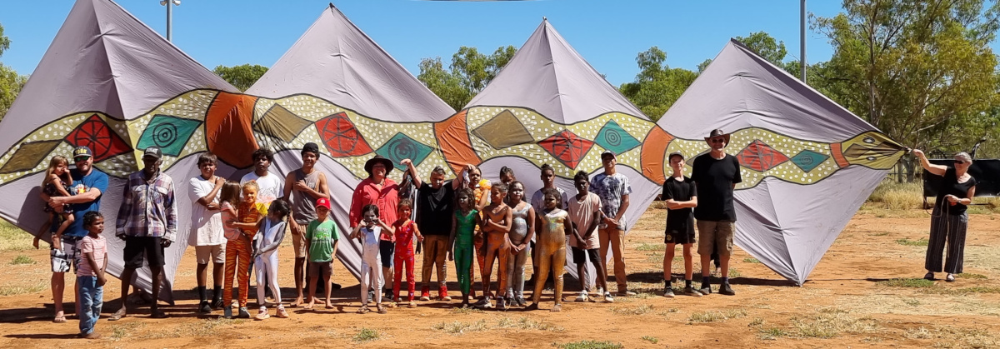

Much of the company's work is undertaken in remote Indigenous communities in outback Australia and includes working with kids to create theatre from their stories about community and strengthening their self-confidence and literacy skills for the future. Their unique drama and storytelling workshops have been developed and refined over many tours through the outback and working with remote communities who rarely receive such creative input.